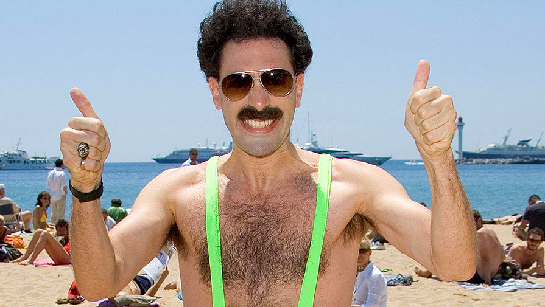
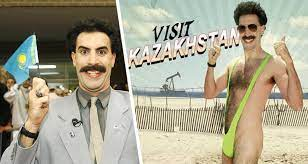
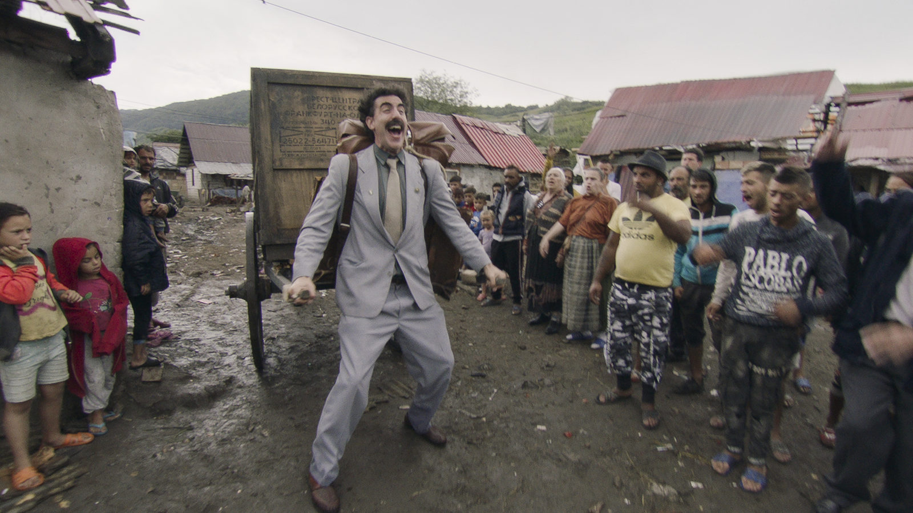

Тесть-Драйв
О фильме
Миша – молодой русский парень, который служит участковым в одном из отделений казахстанской
полиции. Занимая крайне скромную должность, парень мечтает стать настоящим героем,
который...
искусно ловит опасных преступников. А ещё он влюблён в очаровательную девушку, которая
отвечает ему взаимностью. Имея самые серьёзные намерения, Миша решает познакомиться с
родителями подруги и попросить у них руки.
Читать больше
Фотографии из фильма



Сюжет
Главный герой фильма – добросовестный участковый Миша. Однажды он познакомился с симпатичной и милой
девушкой Адиной. Они отлично провели день вместе и начали встречаться. Вскоре пришло время
знакомства с родителями, которое Адина все откладывала. Она боялась, что ее папа еще не готов стать
тестем....
Криминальный авторитет Тайсон занимался своими будничными делами. Он рисовал картину, слушая
квартет певцов, и параллельно избивал связанного человека. Два его головореза в это время
отдыхали на диване. В какой-то момент Тайсон обратился к ним с вопросом, почему до сих пор они
не получили контракт на строительство. Тайсону объяснили, что хозяин фирмы, которая выиграла
тендер, оказался упертым и намеков не понимал. Тайсон приказал найти к нему подход. В это время
Миша никак не мог отделаться от старушки, которая донимала его делом об украденном ковре. С
помощью своей смекалки Миша избавился от нее и стал собираться на встречу с родителями Адины.
Адина попросила Мишу надеть костюм, и герой решил одолжить его у парня, которого задержал вчера
и заставил мыть полы в участке. Прошлым вечером парень был на свадьбе и устроил там дебош. Видео
с его выходками уже разлетелось по всему городу и Адина с подругой тоже его посмотрели. Девушки
особенно отметили, какой нелепый костюм был на главном герое видео.
Миша приехал к Адине в цветастом костюме, но девушка не стала ничего говорить. В это время ее
папа Болат Газирович был в плохом настроении. Он упрекал жену Венеру в том, что она приготовила
мясное блюдо, хотя он последнее время старался питаться правильно. Во время ужина Болат
Газирович сразу же начал нападать на Мишу, а когда узнал, что он простой участковый, со
скандалом выгнал его из дома.
Миша с Адиной вышли на улицу. Девушка пыталась успокоить своего парня и в этот момент люди
Тайсона решили подойти к ней, чтобы спросить о ее отце. Бандиты пренебрежительно оттеснили Мишу
и попросили потеряться, но герой занимался боксом и с удовольствием выплеснул свой негатив на
обидчиков.
Вечером бандиты возвращались к Тайсону, и один из них попросил другого сказать боссу, что они
нарвались на пятерых. На следующий день Болат пришел к своему другу полковнику Тлеку. Тот
объяснил ему, что люди, которые вчера следили за его домом, были из ОПГ и ими уже начали
заниматься. Полковник посоветовал Болату уехать на время из города и предложил съездить к своему
другу-однокурснику. Также он пообещал выделить для охраны своего проверенного человека. Перед
уходом Болат попросил пробить своего потенциального зятя.
Полковник нашел Мишу и предложил ему повышение и перевод в свой отдел, если тот справится с
одним заданием. Герой естественно не стал отказываться. Тайсон решил сделать из четырех своих
певцов звезд, тем более что недавно он отжал одну студию. В это время Миша навестил своего
знакомого Олега Николаевича, который скрывался от своей жены в гараже. Миша попросил у него
муляж гранаты для завтрашнего задания.
Болат пытался помириться со своей дочерью, которая была сильно на него обижена. Венера тоже
пыталась поговорить с Адиной, но девушка ни с кем не хотела разговаривать. В итоге на следующий
день Болат встретился с Тлеком, а после к ним подъехал Михаил. Болат и Михаил сразу начали
пререкаться, но полковник их успокоил. Болату он сказал, что Миша проверенный человек и лучше он
будет с ним, а не с его дочерью, пока его не будет в городе. А Мише полковник посоветовал в этой
поездке наладить отношения со своим будущим зятем.
Болат сел в старенькую машину Миши и они поехали в соседний город. Люди Тайсона, которые следили
за Болатом, поехали за ними. В дроге Миша запретил Болату курить в машине, а потом Болат
отказался пристегиваться. Обстановка накалялась и Болат написал своему человеку, чтобы он забрал
его у заправки. Сотовая связь неожиданно пропала и Болат высунул руку с телефоном в окно.
Естественно телефон упал и разбился. Миша вспомнил унижения, которые ему пришлось терпеть от
Болата в первый день их знакомства, и отказался давать свой телефон.
На заправке Болат потратил всю свою наличность, купив у одного парня его телефон. Однако телефон
оказался нерабочим. За бензин платить было нечем, так как банковские карты там не только не
принимали, но даже не знали, что это такое. На счастье Болата его сообщение дошло, и за ним
приехали его люди. Миша попытался объяснить Болту, что у него приказ его охранять, но бизнесмен
даже слушать его не хотел. Тогда Миша достал гранату и бросил в салон машины. Люди Болата
разбежались, а Миша сел за руль и поехал. В это время бандит Бэха пытался справиться с тупостью
своего напарника. Он представлял, как избивает и убивает его. Однако это были лишь мечты, так
как в машине с ним был племянник Тайсона, за которого он отвечал головой.
Напарник Бэхи продолжал мотать ему нервы, а Миша решил взять попутчика. Стало ясно, что казах
Болат знал только русский язык, а вот Миша свободно общался и на казахском. Болат проголодался и
попутчик посоветовал им кафе «MMA» неподалеку.
В кафе Болат хамил и требовал салат, но его смогли уговорить на плов. Пока им несли еду, Болат
спросил Мишу зачем он подобрал попутчика. Герой объяснил, что не мог проехать мимо человека,
который шел по трассе в такой холод. Миша также рассказал, что благодаря воспитанию отца стал
полицейским, чтобы нести в мир справедливость и порядок.
Болат вышел в туалет, который был на улице и там его уже поджидали бандиты Тайсона. Они вырубили
его и начали тащить в свою машину, но тут племяннику Тайсона захотелось сломать снеговиков,
которых с особой любовью слепила официантка. В окно девушка заметила, что ее снеговиков сломали
и выбежала на улицу. Кафе не просто так называлось MMA и официантка с особой легкостью
нокаутировала двух бандитов. Миша тоже выбежал на улицу. Он посадил Болата в машину, и они
поехали дальше.
В машине кончился бензин, и Миша предложил дальше идти пешком. Болату пришлось согласиться и
через километр дороги по степи он начал ныть, что устал. Однако услышав вой волков, Болат
побежал вперед Миши. Участковый пытался его остановить, но Болат уже провалился в яму и упал
лицом прямо на ядовитую колючку.
Миша дотащил Болата до дома, где жила его семья. Бизнесмен был без сознания и с распухшими
губами. Миша позвонил полковнику и рассказал о своих приключениях с Болатом. Полковник пообещал
прислать ему на подмогу своих людей. После Миша предложил вколоть Болату лекарство, которое тот
давал баранам, если те натыкались на такие же колючки.
На следующий день Болат пришел в себя и сел за общий стол с семьей Миши. Выяснилось, что Мишу
усыновила семья ветеринара. Приемный отец рассказал Болату несколько историй про Мишу и тот
начал менять о нем свое мнение. После гостя повели мыться в баню. В это время избитые люди
Тайсона искали Болата. Бэха задумался бросить бандитскую жизнь и вернуться в школу, где работал
учителем биологии.
Бандиты увидели брата Миши, который пошел заниматься коровами. Они спросили его про казаха и
русского из города, но парень ответил, что не видел таких в их ауле. В это время Болату стало
плохо в бане, и Мише пришлось приводить его в чувства на улице. Вскоре к ним в баню прибежал
брат Миши и сказал, что их ищут двое на черном внедорожнике.
Одежду Миши и Болата постирали, и им пришлось надеть смешные пижамы. В них они прыгнули на
старенький мотоцикл с коляской и начали уезжать, но бандиты увидели их и началась погоня. В
результате этой безумной гонки по аулу, бандиты влетели в сугроб и разбили машину.
Когда Тайсон не смог дозвониться до Бэхи и племянника, он решил действовать по плану «Б». Глава
ОПГ отправил еще одну пару своих людей, чтобы похитить Адину. Однако тем тоже не повезло
нарваться на боевую женщину и в итоге Адида скрылась от них, прибежав к полковнику. В это время
Миша понял, что полковник был заодно с Тайсоном, так как только он знал, где они укрывались.
Тлек привез Адину к Тайсону и тот хотел заставить девушку позвонить своему отцу. Однако Болат
был недоступен и тогда бандит решил подождать. В это время Миша и Болат вернулись в город и
пришли в офис строительной компании Болата. Там они узнали, что Адина у бандитов. Миша позвонил
Олегу Николаевичу и на этот раз попросил настоящую гранату. После Олег Николаевич, который
оказался полковником, дал задание какому-то человеку.
Болат и Миша приехали к Тайсону, и в обмен на дочь Болат подписал нужную бумагу. После этого
Тайсон отпустил всех, но Тлека это не устроило. Он боялся, что они сдадут его. Тогда Тайсон дал
ему пистолет и предложил решить свою проблему самостоятельно. Полковник вышел на улицу и
собирался застрелить Болата, но там его уже ждал отряд спецназа. Тлек понял, что деваться ему
некуда и выстрелил, после чего его расстреляли из автоматов.
Пуля полковника попала Мише в грудь. Болат кинулся к нему. Пока спецназ вязал бандитов,
бизнесмен умолял участкового не умирать и говорил, что разрешит жениться на Адине. Спустя
полтора года. Болат собирался построить дом своими руками и капал яму под будущий фундамент.
Миша, который все-таки выжил после ранения, помогал ему. А в финале фильма Мише позвонила Адина
и сказала, что рожает.
Читать больше